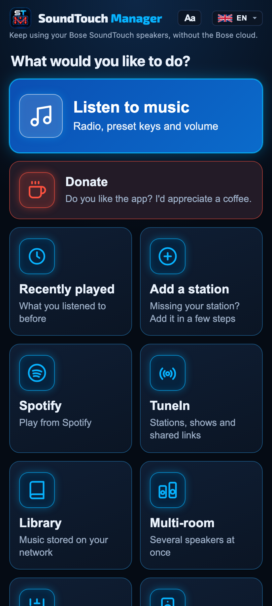
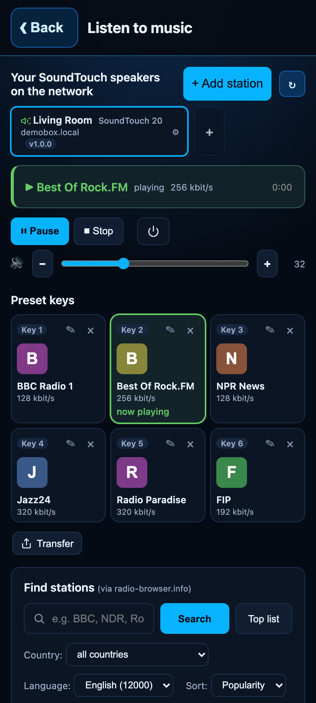
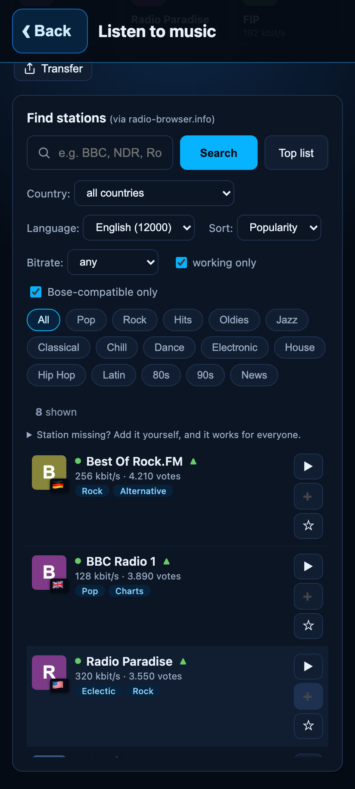
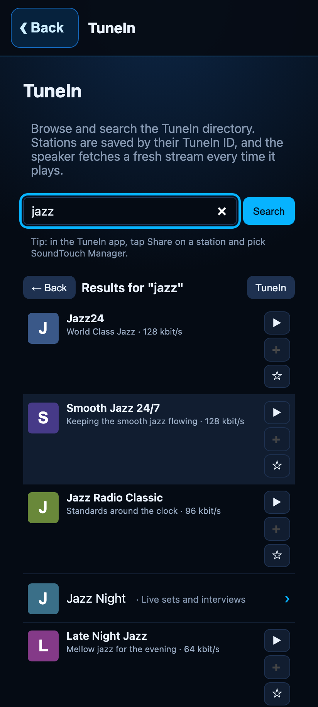
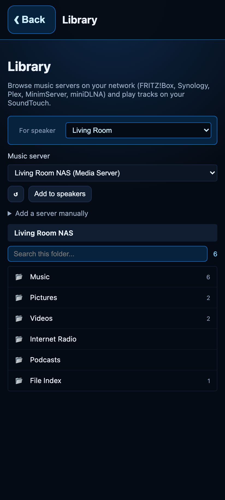
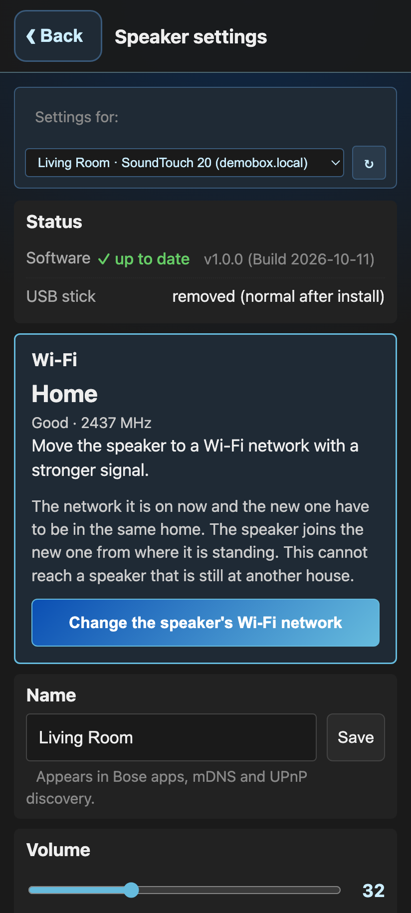
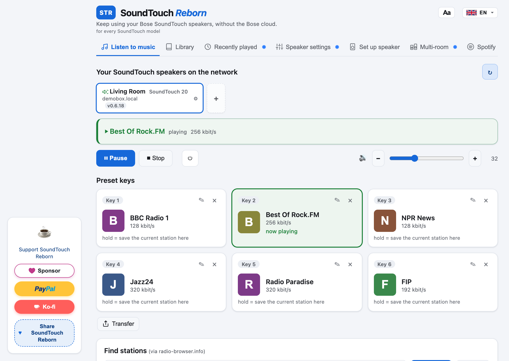

Jūsu Bose SoundTouch atkal darbojas.
Bose izslēdza SoundTouch mākoni 2026. gada 6. maijā. SoundTouch Manager atgriež interneta radio, saglabāto staciju pogas, Spotify un pulti. Viss darbojas skaļrunī, bez konta un bez mākoņa.
Bezmaksas un atvērtais kods (MIT licence).Instalēšana ar Android lietotni
Tālrunim un skaļrunim jābūt vienā Wi-Fi tīklā. Lietojiet šo kopiju, līdz lietotne parādās Google Play. Skaļruņa iestatījumos varat to pārcelt uz citu Wi-Fi tīklu tajā pašā mājā, ar stiprāku signālu. Bose lietotne tam nav vajadzīga.






- Lejupielādējiet SoundTouchManager-1.0.0-Android.apk. Ja pārlūkprogramma brīdina, ka fails var kaitēt ierīcei, izvēlieties Tomēr lejupielādēt.
- Atļaujiet instalēšanu. Ja Android bloķē, pieskarieties Iestatījumi un ļaujiet pārlūkam vai Failu lietotnei instalēt nezināmas lietotnes. Pēc tam atveriet failu vēlreiz.
- Iziet Play Protect. Ja lietotne ir nezināma, pieskarieties Sīkāka informācija, tad Tomēr instalēt.
- Atveriet lietotni un izvēlieties „Iestatīt skaļruni“. Tā nokopē nelielu aģentu uz skaļruni, kas jau ir jūsu Wi-Fi tīklā. USB zibatmiņa nav vajadzīga.
Tālrunī lietotnes nosaukums ir SoundTouch Manager. Atbalsts atver GitHub Sponsors, PayPal un Ko-fi. iPhone pakotnes nav. Apple instalē tikai lietotni, ko parakstījis šim tālrunim, vai lietotni no App Store.

Kas atgriežas
Interneta radio
Meklējiet tūkstošiem staciju radio-browser.info un atskaņojiet tās jebkurā skaļrunī.
Pogas no 1 līdz 6
Skaļruņa un pults pogas atkal ieslēdz izvēlētās stacijas.
Spotify Connect
Atskaņojiet Spotify skaļrunī un saglabājiet sarakstus kā stacijas.
Jūsu mūzika
Pārlūkojiet DLNA serverus mājas tīklā (FRITZ!Box, Synology, Plex, miniDLNA).
Vairākas telpas un stereo
Salieciet skaļruņus kopā, lai tie skanētu vienlaikus, vai izveidojiet kreiso un labo pāri.
Pults tālrunī
Katrs skaļrunis atver pulti tālruņa pārlūkā. Veikals un konts nav vajadzīgi.
Wi-Fi maiņa
Pārceliet skaļruni, kurā jau ir SoundTouch Manager, uz citu tās pašas mājas Wi-Fi, un pēc tam savienojiet tālruni ar šo tīklu.
Trīs soļi
- Lejupielādējiet lietotni Windows, macOS vai Linux.
- Atveriet to tajā pašā tīklā, kur ir skaļrunis. Tā pati atrod SoundTouch.
- Izvēlieties „Iestatīt skaļruni“. Lietotne pa mājas tīklu ieliek skaļrunī nelielu aģentu. USB zibatmiņa nav vajadzīga; tā paliek kā rezerves ceļš.
Windows vai macOS brīdina, ka izstrādātājs nav zināms
Būvējums bez koda paraksta pirmo reizi atverot rāda brīdinājumu.
- Windows (SmartScreen): noklikšķiniet Papildinformācija, pēc tam Tāpat palaist. Ja pārlūkprogramma bloķē .exe, lejupielādējiet šo .zip.
- macOS (Gatekeeper): diska attēls ir Apple Silicon (M1 vai jaunākam). Velciet lietotni uz Programmas, noklikšķiniet ar labo pogu, izvēlieties Atvērt, pēc tam vēlreiz Atvērt. Vai ejiet uz Sistēmas iestatījumi, Privātums un drošība un noklikšķiniet Tomēr atvērt.
- Linux: Atpakojiet arhīvu, izpildiet šo komandu un palaidiet. Vajag GTK 3 un WebKitGTK 4.1:
chmod +x SoundTouchManager-1.0.0-Linux-x64.
Lai pārbaudītu, ka lejupielāde ir vesela, salīdziniet SHA-256 ar SHA256SUMS.
Atbalstītie skaļruņi
| Modelis | Stāvoklis |
|---|---|
| SoundTouch 10 | Pārbaudīts |
| SoundTouch 20 | Darbojas |
| SoundTouch 30 | Darbojas |
| SoundTouch Portable | Pārbaudīts |
| SoundTouch 300, Wave III and IV, SA-4, SA-5, CineMate 520 and 130 | Darbojas (instalēšana pa tīklu) |
Sīkāk par katru modeli (angļu valodā): docs/MODELS.md.
Jautājumi
Vai vajag Bose kontu vai Bose lietotni?
Nē. Viss darbojas skaļrunī un datorā, jūsu mājas tīklā.
Vai var mainīt skaļruņa Wi-Fi?
Jā, ja SoundTouch Manager jau ir skaļrunī. Atveriet skaļruņa iestatījumus un izvēlieties Iestatīt citu Wi-Fi tīklu. Pašreizējam un jaunajam tīklam jābūt tajā pašā mājā: skaļrunis pievienojas jaunajam no vietas, kur tas stāv. Pēc tam savienojiet tālruni ar jauno tīklu. Skaļruni, kas nekad nav bijis tīklā, iestata ar Iestatīt skaļruni, Bose lietotni, Ethernet kabeli vai USB zibatmiņu.
Kāda aparātprogrammatūra skaļrunim vajadzīga?
SoundTouch Manager ir veidots un pārbaudīts ar Bose aparātprogrammatūru 27.0.6, pēdējo, ko Bose izlaida. Vispirms atjauniniet skaļruni, tad instalējiet. Kā to darīt, rakstīts docs/FIRMWARE-UPDATE.md (angļu valodā); tiek izmantoti paša Bose attēli un USB zibatmiņa.
Aparātprogrammatūras atjauninājums iestrēgst vai tiek atteikts
Skaļruņi ar daudz vecāku aparātprogrammatūru, pēc ziņojumiem, atteicās lēkt uzreiz uz 27.0.6. Praksē nostrādāja vispirms nolaist, tad pacelt: vispirms 6.02.01, pēc tam 27.0.6. Rūpnīcas atiestatīšana (turiet 1 un skaļuma samazināšanu desmit sekundes) pirms atjauninājuma var notīrīt līdz pusei iestatītu stāvokli. Šie soļi ir no lietotāju ziņojumiem, projekts tos nav atkārtojis; skatiet 4. sadaļu docs/FIRMWARE-UPDATE.md.
Kā to noņemt no skaļruņa?
Lietotnē atveriet skaļruņa iestatījumus un izvēlieties Noņemt STM. Bose rūpnīcas atiestatīšana vien to nenoņem. Izdariet to, pirms pārdodat vai atdodat skaļruni.
Kaut kas nedarbojas
Apskatiet atvērtos ziņojumus GitHub. Saglabāt diagnostikas žurnālus.
Atbalstīt projektu
SoundTouch Manager ir bezmaksas. Ja tā izglāba jūsu skaļruņus, kafija palīdz tai turpināties.